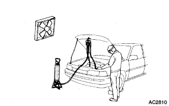
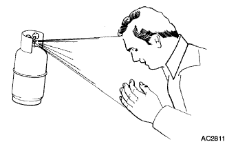
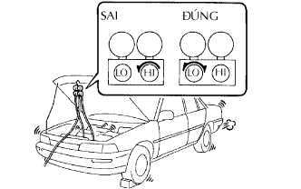

HỆ THỐNG ĐIỀU HOÀ KHÔNG KHÍ > LƯU Ý |
| 1.KHÔNG ĐƯỢC SỬ DỤNG GA ĐIỀU HOÀ Ở NHỮNG KHU VỰC GẦN VỚI LỬA |
|  |
| 2.LUÔN LUÔN ĐEO KÍNH BẢO HỘ |
| 3.TRÁNH CHO DA HOẶC MẮT KHỎI TIẾP XÚC VỚI GA LỎNG ĐIỀU HOÀ |
|  |
Hãy rửa kỹ vùng này bằng nước lạnh.
Bôi mỡ sạch lên da.
Đến bệnh viên ngay lập tức hoặc tìm thầy thuốc chuyên nghiệp để chữa trị.
| 4.KHÔNG BAO GIỜ ĐƯỢC ĐUN NÓNG BÌNH CHỨA HOẶC ĐỂ HỞ NÓ GẦN LỬA |
| 5.KHÔNG ĐƯỢC ĐÁNH RƠI HOẶC ĐẬP VÀO BÌNH CHỨA GA |
| 6.KHÔNG ĐƯỢC VẬN HÀNH MÁY NÉN KHI KHÔNG CÓ ĐỦ GA ĐIỀU HOÀ TRONG HỆ THỐNG |
|  |
| 7.KHÔNG ĐƯỢC MỞ VAN PHÍA CAO ÁP TRONG KHI MÁY NÉN ĐANG HOẠT ĐỘNG |
| 8.CẨN THẬN KHÔNG ĐƯỢC NẠP QUÁ NHIỀU GA CHO HỆ THỐNG |
| 9.KHÔNG ĐƯỢC KHỞI ĐỘNG ĐỘNG CƠ VÀ MÁY NÉN KHÔNG CÓ GA TRONG HỆ THỐNG |